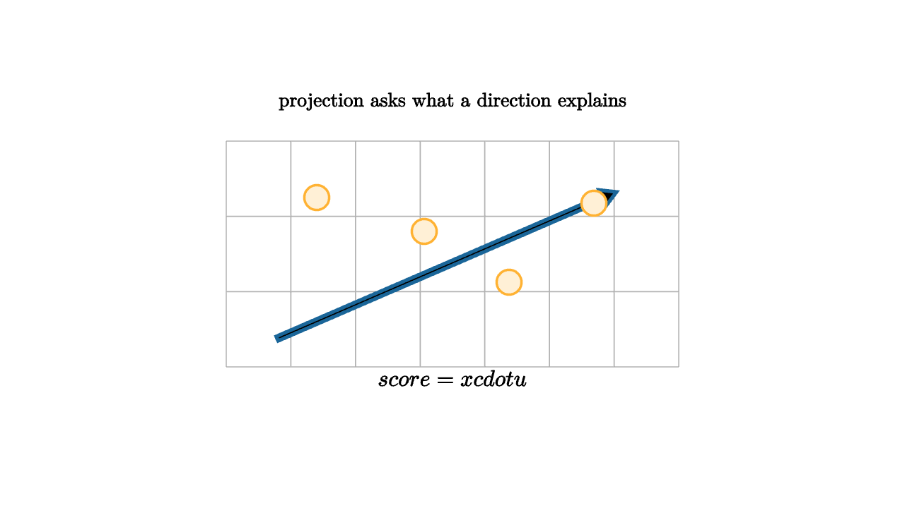

A data set is often introduced as a table, but the mathematical view is a cloud of vectors. Each row is a point. Each column is a direction in which the point can vary. Once data becomes geometry, the first modeling move is projection: choose a direction and ask how much of each point lies along it.

source
let soft = |col, amount| lerp(WHITE, col, amount)
mesh picture = [
center{1.35u} Text("projection asks what a direction explains", 0.62),
stroke{LIGHT_GRAY, 1} LineGrid([-2, 2, 8], [-1, 1, 4], 1),
stroke{BLUE, 3} Arrow(1.55l + 0.75d, 1.45r + 0.55u),
center{1.2l + 0.5u} fill{soft(ORANGE, 0.2)} stroke{ORANGE, 2} Circle(0.11),
center{0.25l + 0.2u} fill{soft(ORANGE, 0.2)} stroke{ORANGE, 2} Circle(0.11),
center{0.5r + 0.25d} fill{soft(ORANGE, 0.2)} stroke{ORANGE, 2} Circle(0.11),
center{1.25r + 0.45u} fill{soft(ORANGE, 0.2)} stroke{ORANGE, 2} Circle(0.11),
center{1.1d} Tex("score = x \\cdot u", 0.72)
]The dot product is a measuring device. If u is a unit vector, then x dot u gives the signed length of the shadow of x on that direction. A high score means the point is far along the chosen axis. A low score means the point is near the origin or points the other way. The residual is what remains after the shadow is removed.
This is the core of least squares. We choose a small subspace, project data onto it, and study the residual. A good model explains structure with few coordinates while leaving residuals that look like noise or variation we have decided not to model.
For a line through the origin in direction $u$, the projection of $x$ is
when $u$ has length one. The residual is
The key geometric fact is perpendicularity: the residual is orthogonal to the model direction. Least squares is built from this fact. The best approximation in a subspace leaves an error vector that points at right angles to every allowed direction in that subspace.
source
let soft = |col, amount| lerp(WHITE, col, amount)
"Cloud"
mesh cloud = [
center{1.35u} Text("rows become points", 0.62),
center{1.35l + 0.55d} fill{soft(BLUE, 0.2)} stroke{BLUE, 2} Circle(0.1),
center{0.75l + 0.2u} fill{soft(BLUE, 0.2)} stroke{BLUE, 2} Circle(0.1),
center{0.1l + 0.55u} fill{soft(BLUE, 0.2)} stroke{BLUE, 2} Circle(0.1),
center{0.55r + 0.1u} fill{soft(BLUE, 0.2)} stroke{BLUE, 2} Circle(0.1),
center{1.2r + 0.7u} fill{soft(BLUE, 0.2)} stroke{BLUE, 2} Circle(0.1)
]
play Grow(0.7)
"Axis"
mesh axis = stroke{ORANGE, 3} Arrow(1.7l + 0.8d, 1.6r + 0.75u)
mesh note = center{1.15d} Text("a model direction creates scores", 0.62)
play [Write(0.8, [&axis]), Fade(0.6, [¬e])]
"Residuals"
mesh residuals = [
stroke{GREEN, 2} Line(0.75l + 0.2u, 0.82l + 0.02u),
stroke{GREEN, 2} Line(0.1l + 0.55u, 0.0r + 0.23u),
stroke{GREEN, 2} Line(0.55r + 0.1u, 0.45r + 0.3d),
center{1.15d} Text("leftover length is residual variation", 0.62)
]
play Write(0.9)Projection is also an interpretive act. A direction could be a survey index, a contrast between two markets, an average of sensor channels, or a time trend. The calculation is linear algebra, but the responsible question is semantic: what does this direction mean, and what kinds of variation does it hide?
This makes projection a good first lesson in mathematical data science. It contains the entire discipline in miniature: choose a representation, compress the data, measure what remains, then ask whether the compression respects the real question. The numbers can be computed automatically. The choice of direction still needs human meaning.